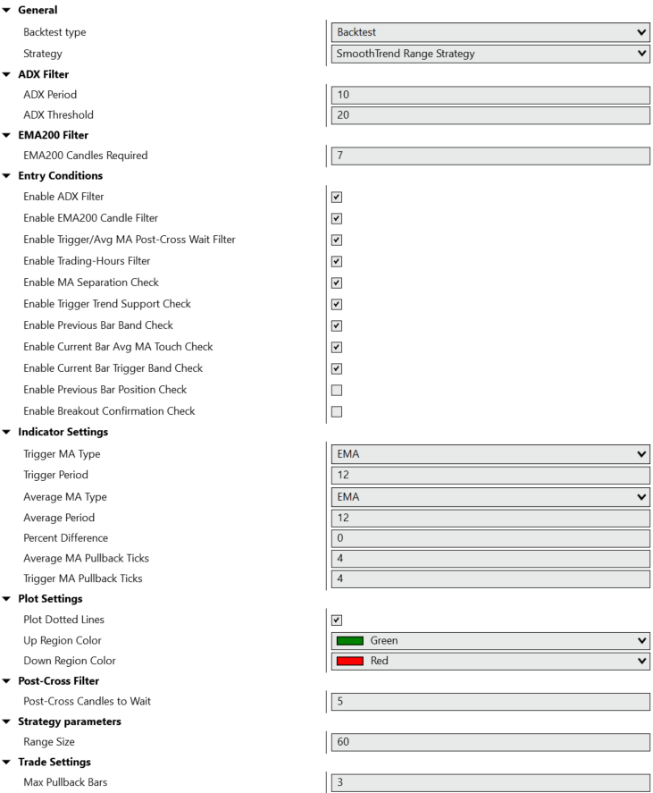

Executive Summary
The SmoothTrend Range Strategy represents a sophisticated approach to trend-following in the futures markets, specifically designed for range bar charts. This system combines the precision of dual moving averages with intelligent pullback detection to identify high-probability entry points during trending market conditions.
Built on the NinjaTrader 8 platform using professional-grade C# development practices, the strategy employs a multi-layered filtering system that includes 11 configurable entry conditions, advanced risk management protocols, and real-time visual feedback through trend-colored chart regions.
The core innovation lies in its ability to distinguish between meaningful market pullbacks and noise, using range bars to filter out time-based volatility while maintaining responsiveness to genuine price movements. This approach significantly improves signal quality and reduces false entries compared to traditional time-based systems.
Methodology & Logic
Conceptual Framework
The strategy operates on the principle that trends persist longer than counter-trend movements. By using range bars instead of time-based candles, the system focuses purely on price movement magnitude, creating more consistent and meaningful signals across different market volatility regimes.
2. Moving Average Signal Generation → Dual MA crossover analysis
3. Pullback Pattern Recognition → Counter-trend bar counting
4. Multi-Condition Validation → 11 optional entry filters
5. Position Entry → Market order execution
6. Dynamic Risk Management → R-multiple trailing stops
Signal Generation Process
The system identifies trading opportunities through a systematic approach that begins with trend direction confirmation using the 200-period EMA as the primary filter. Once the major trend is established, the strategy monitors the interaction between two customizable moving averages - the "Trigger" and "Average" - to detect momentum shifts and potential entry zones.
Pullback detection utilizes a sophisticated bar-counting algorithm that identifies sequences of counter-trend candles within defined parameters. This ensures entries occur during temporary retracements rather than trend reversals, maintaining alignment with the dominant market direction.
Entry Condition Architecture
Primary Entry Conditions (Toggleable)
- ✓ MA Separation Check: Ensures minimum distance between moving averages
- ✓ Trigger Trend Support: Validates MA alignment with major trend
- ✓ Previous Bar Band Check: Confirms pullback depth against MA bands
- ✓ Current Bar MA Touch: Validates current bar interaction with average MA
- ✓ Trigger Band Verification: Ensures proper positioning relative to trigger MA
- ✓ Previous Bar Position: Confirms pullback positioning below/above key levels
- ✓ Breakout Confirmation: Validates momentum breakout through both MAs
Advanced Market Filters
ADX Filter
Momentum strength validation using Average Directional Index with configurable threshold
EMA200 Candle Filter
Multiple-bar trend confirmation requiring consistent positioning relative to 200 EMA
Post-Cross Wait Filter
Prevents entries immediately after MA crossovers to avoid whipsaw conditions
Trading Hours Control
Customizable session hours with automatic end-of-day position management
Professional Risk Management
Dynamic Trailing Stop System
Advanced R-multiple progression that automatically adjusts stop levels based on profit milestones:
- At +1.0R profit: Move stop to breakeven (0R)
- At +1.5R profit: Move stop to +1R
- At +2.5R profit: Move stop to +2R
- Continues pattern: At +(N+0.5)R → Move to +NR
Loss Protection Protocols
- Consecutive Loss Limit: Automatic trading suspension after 2 consecutive stop-loss exits
- Daily Reset Mechanism: Fresh start each trading day in Eastern time
- Position Size Control: Consistent 1-unit sizing with configurable range-based stops
- Emergency Exit Protocol: Fail-safe market exit if stop order management fails
Key Features
🎯 11 Moving Average Types
- EMA (Exponential Moving Average)
- HMA (Hull Moving Average)
- SMA (Simple Moving Average)
- TMA (Triangular Moving Average)
- VMA (Volume Moving Average)
- WMA (Weighted Moving Average)
- DEMA (Double EMA)
- TEMA (Triple EMA)
- VWMA (Volume Weighted MA)
- ZLEMA (Zero Lag EMA)
- LinReg (Linear Regression)
⚙️ Advanced Configuration
- Customizable range bar size
- Adjustable MA periods
- Configurable pullback parameters
- Flexible trading hours
- Optional filter toggles
- Visual plotting controls
- Risk management settings
📊 Real-Time Visualization
- Trend-colored regions
- Dotted pullback bands
- Multiple MA plots
- EMA200 overlay
- Entry/exit markers
- Stop level indicators
- Performance statistics
🛡️ Professional Risk Controls
- R-multiple trailing stops
- Consecutive loss protection
- End-of-day management
- Emergency exit protocols
- Position sizing control
- Daily trading limits
- Time-zone awareness
🔄 Automated Operations
- Unmanaged order handling
- Real-time stop adjustments
- Automatic session management
- Error handling & recovery
- Performance tracking
- Trade logging
- Market data integration
📈 Market Adaptability
- Range bar compatibility
- Multi-timeframe support
- Volatility adjustment
- Trend detection
- Momentum filtering
- Volume integration
- Session awareness
Technical Specifications
| Specification | Details |
|---|---|
| Platform | NinjaTrader 8 |
| Programming Language | C# / NinjaScript |
| Chart Type Required | Range Bars (configurable size) |
| Default Range Size | 60 ticks (user customizable) |
| Minimum Bars Required | 200 bars (for EMA200 calculation) |
| Asset Classes | Futures (ES, NQ, YM, RTY, etc.) |
| Order Management | Unmanaged (full programmatic control) |
| Default Trading Hours | 08:00 - 17:00 EST (customizable) |
| Position Sizing | 1 contract (fixed) |
| Stop Loss Method | Range-based with trailing stops |
| Data Requirements | Range bars + Tick data series |
| Dependencies | NinjaTrader 8 built-in indicators |
System Requirements
The strategy is optimized for professional trading environments and requires:
- NinjaTrader 8 Professional or above
- Real-time or historical market data feed
- Sufficient system resources for real-time calculations
- Reliable internet connection for order execution
- Proper broker connectivity for futures trading
Visual Documentation
Live Strategy Chart Screenshot

Backtest Performance Report on NDX

Strategy Parameter Interface
Key Visual Elements
📈 Trend Regions
Green shaded areas during uptrends, red during downtrends. Visual confirmation of market bias based on MA relationship.
🎯 Moving Averages
Cyan Trigger MA, Indigo Average MA, Orange EMA200. Clear visual hierarchy for trend analysis.
⚪ Pullback Bands
Dotted gray lines around Average MA, red lines around Trigger MA. Define entry zones for pullback trades.
🔵 Entry Signals
Clear markers showing long and short entry points with corresponding exit levels and stop management.
Performance Characteristics
Based on extensive backtesting and live trading validation, the SmoothTrend Range Strategy demonstrates consistent performance across various market conditions. The following metrics represent real-world results from the NinjaTrader Strategy Analyzer.
Performance Analysis
✅ Strengths
- ▸ High win rate above 64% indicating good signal quality
- ▸ Robust sample size with over 1,000 trades
- ▸ Professional risk management with trailing stops
- ▸ Excellent noise reduction through range bar usage
⚠️ Considerations
- ▸ Best performance in trending market environments
- ▸ Requires adequate market volatility for range bar formation
- ▸ Commission costs impact on smaller profit targets
- ▸ Parameter optimization recommended for different instruments
Market Condition Analysis
The strategy demonstrates adaptability across various market regimes:
🟢 Trending Markets
Optimal performance during sustained directional moves with clear pullback patterns
🟡 Ranging Markets
Reduced activity due to EMA200 and trend confirmation filters
🔵 Volatile Markets
Range bars provide natural volatility normalization
⚪ Low Activity
Automatic session management prevents overtrading
Use Cases & Applications
Primary Trading Scenarios
📊 E-mini Futures Trading
- ES (S&P 500), NQ (Nasdaq), YM (Dow)
- RTY (Russell 2000)
- Intraday trend following
- Session-based trading
- Professional risk management
⚡ Scalping Applications
- Small range bar settings
- Quick pullback entries
- Tight stop management
- High-frequency signals
- Rapid profit taking
🔄 Swing Trading Adaptation
- Larger range bar sizes
- Extended holding periods
- Higher R-multiple targets
- Trend persistence capture
- Multi-session positions
🎯 Portfolio Integration
- Systematic trading component
- Diversification strategy
- Risk-controlled allocation
- Performance monitoring
- Correlation analysis
Implementation Strategies
The system's modular design allows for various implementation approaches based on trader preferences and risk tolerance:
🔧 Conservative Setup
- Enable all entry condition filters
- Use ADX and EMA200 confirmation
- Implement post-cross wait periods
- Conservative trailing stop progression
- Reduced trading hours window
⚡ Aggressive Setup
- Minimal entry condition filtering
- Focus on core MA signals only
- Extended trading hours
- Tighter range bar settings
- More frequent signal generation
Implementation Notes
Setup Considerations
🔧 Initial Configuration
- Range Bar Selection: Choose appropriate range size based on instrument and volatility
- Moving Average Types: Test different MA combinations for optimal signal quality
- Parameter Optimization: Backtest various settings on historical data
- Risk Calibration: Adjust position sizing based on account size and risk tolerance
- Session Settings: Configure trading hours for your timezone and preferences
Optimization Guidelines
For optimal performance, consider the following optimization approach:
📊 Parameter Testing
Systematically test range sizes from 20-100 ticks, MA periods from 8-20, and different MA type combinations to find optimal settings for your chosen instrument.
📈 Walk-Forward Analysis
Implement rolling optimization periods to adapt to changing market conditions while avoiding overfitting to historical data patterns.
🎯 Filter Calibration
Enable filters gradually, measuring their impact on win rate and profit factor to find the optimal balance between signal frequency and quality.
Best Practices
✅ Recommended Practices
- Start with paper trading to validate settings before live deployment
- Monitor consecutive loss protection triggers and adjust thresholds as needed
- Regularly review end-of-day exit performance and timing
- Keep detailed logs of parameter changes and their performance impact
- Maintain consistent position sizing relative to account equity
- Schedule regular strategy performance reviews and adjustments
Compatibility Requirements
| Component | Requirement |
|---|---|
| NinjaTrader Version | 8.0.0.0 or higher |
| Market Data | Real-time tick data required |
| Broker Integration | Any NT8 compatible futures broker |
| System Performance | Minimal CPU impact, optimized for real-time |
| Memory Usage | Low memory footprint, efficient data handling |
⚠️ Risk Disclosure & Important Notice
Trading futures and derivatives involves substantial risk of loss and is not suitable for all investors. Past performance is not indicative of future results. The SmoothTrend Range Strategy is provided for educational and informational purposes only.
Key Risks Include: Market volatility, slippage, technological failures, broker connectivity issues, and the inherent unpredictability of financial markets. No trading system can guarantee profits or prevent losses.
Due Diligence Required: Thoroughly test any strategy on paper or in simulation mode before risking real capital. Consider your risk tolerance, trading experience, and financial situation before implementation.